Nexta AI · Yordamchi
O'qitish, baholash va akademik operatsiyalar bo'yicha sizning yordamchingiz.
Sillabus tuzish, savol banklari yaratish va kontent tayyorlashda yordam beradi.
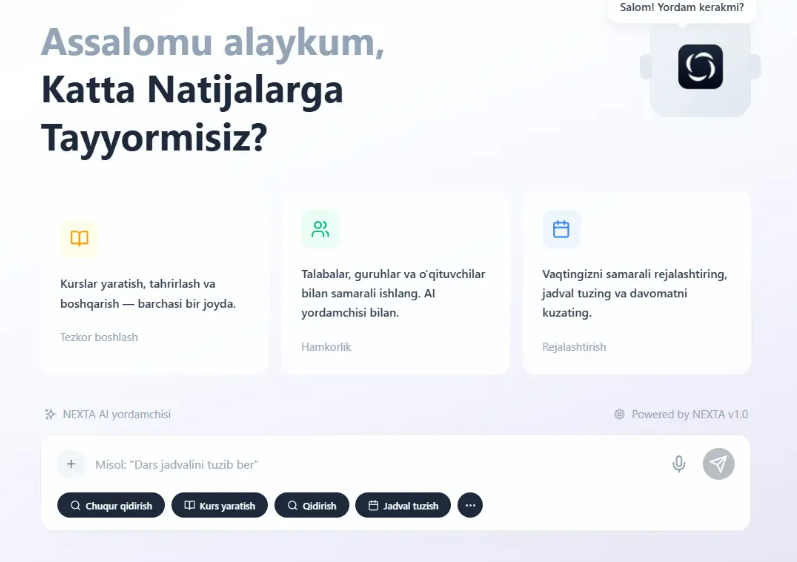
Kurslar, baholashlar, AI ish jarayonlari, analitika, proktoring va muassasa operatsiyalarini bitta xavfsiz platformada boshqaring — universitetlar, vazirliklar va yirik o'quv tashkilotlari uchun yaratilgan.
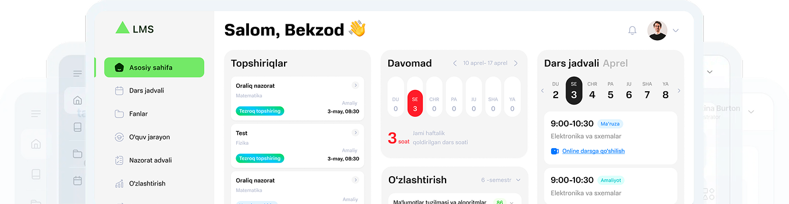
Uchta ishlab chiqarish darajasidagi model, bitta yordamchi va akademik halollik, kontent sifati hamda o'qituvchi qarorini ta'minlovchi siyosat qatlami.
Sillabus tuzish, savol banklari yaratish va kontent tayyorlashda yordam beradi.

Tillararo semantik o'xshashlik tarjima qilingan va qayta yozilgan ishlarni ham aniqlaydi, manbagacha izlanadi.
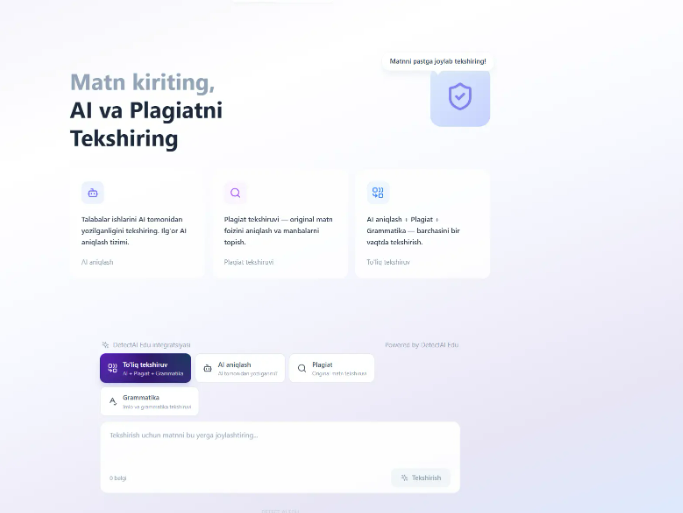
Darslar, testlar, rubrikalar va tiklash kontentini o'z materiallaringizdan yarating — ochiq internetdan emas.
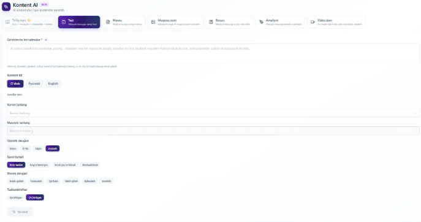
Yettita asosiy modul, bitta ma'lumotlar modeli. Turli vositalar o'rtasida sakrashga hojat yo'q — har bir topshiriq, davomat va baho bir xil yozuvga jamlanadi.
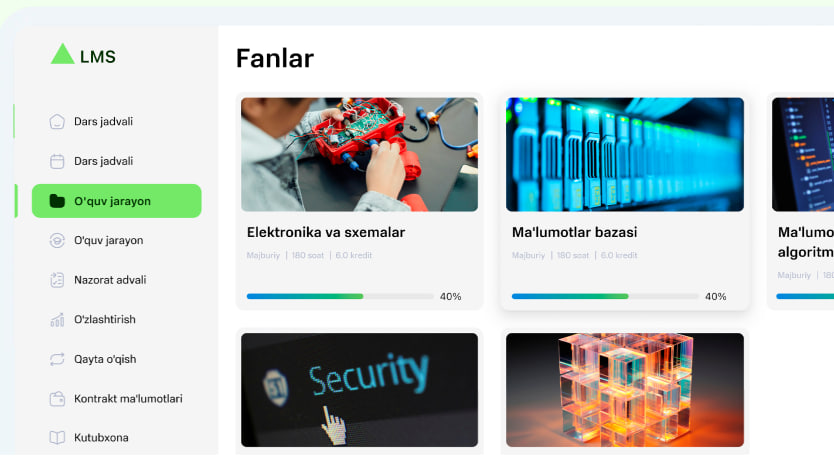
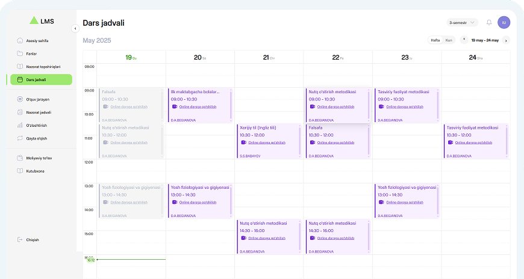
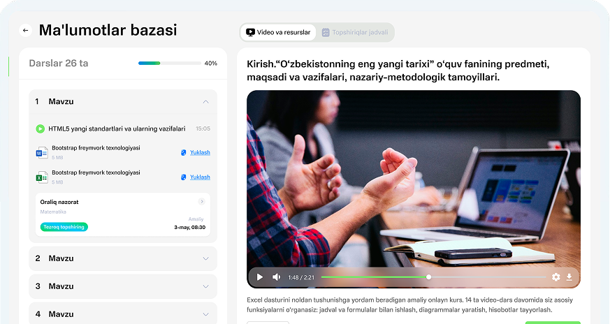
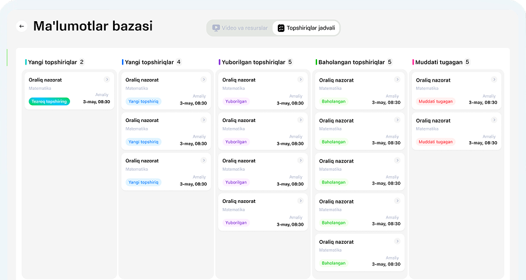
Biometrik, xulq-atvor va audio signallar bilan ko'p ta'minlovchili proktoring qatlami — birinchi kadrdan oxirgi hisobotgacha auditga tayyor.
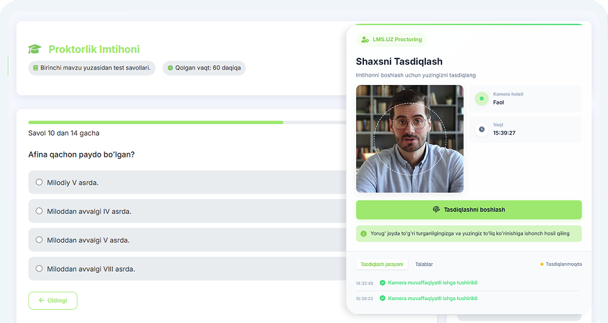
LMS.uz dagi har bir ma'lumot shaxs, kurs va hodisaga bog'langan — shu sababli har bir hisobot qayta tiklanadigan, auditga tayyor va vazirlik qabul qiladigan formatda eksport qilinadi.
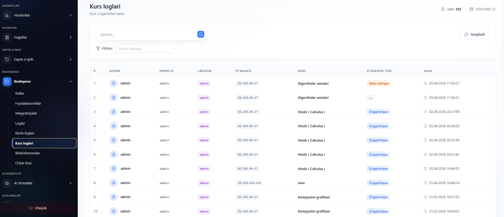
Birinchi darajali HEMIS amalga oshirilishi, sertifikatlangan Microsoft va Zoom integratsiyalari, AI ta'minotchilar shlyuzi va mintaqadagi har bir asosiy elektron kutubxona tizimiga adapterlar.
To'liq oflayn kursli, sinf darajasidagi push xabarnomali va mintaqadagi past traffik tarmoqlar uchun moslashtirilgan native iOS hamda Android ilovalari.
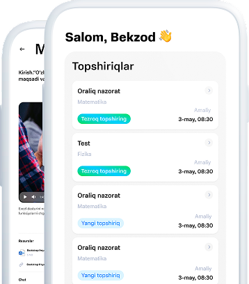
Ro'yxatga oluvchilar, talabalar ishlari dekanlari va IT direktorlari bilan birga yaratilgan — quyidagi jarayonlar platformaning birinchi darajali ob'ektlari, qo'shilgan plaginlar emas.
Muvaffaqiyatsiz talabalar predmet bloklash, to'lov integratsiyasi va alohida transkript yozuvi bilan tuzilgan qayta o'qish dasturiga yo'naltiriladi — to'liq kuzatilishi mumkin.
Davomat va baho chegaralari avtomatik aralashuvlarni ishga tushiradi: konsultant aloqasi, repetitor murojaati va apellyatsiya jarayonlari bilan sinov muddati.
18 ta institutsional rol bo'yicha aniq RBAC, delegatsiya, muddat tugashi va tashrif buyurgan o'qituvchilar hamda tashqi baholovchilar uchun cheklangan ustunliklar.
Kim nima qilayotganini real vaqtda ko'rish — imtihon davrida, ro'yxatdan o'tish cho'qqilarida va vazirlik tekshiruvlarida foydali.
Har bir baho o'zgarishi, rol tayinlanishi va tizim harakati uchun buzilishga chidamli audit izi. Akkreditatsiya tekshiruvlari uchun eksport qilinadi.
Yechimlar jamoamiz bilan 45 daqiqalik tanishuv. Muassasangiz hajmiga mos namuna ma'lumotlarni olib kelamiz — slayd taqdimoti emas.